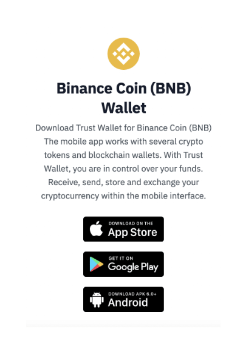
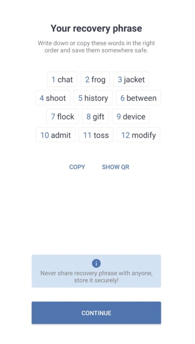
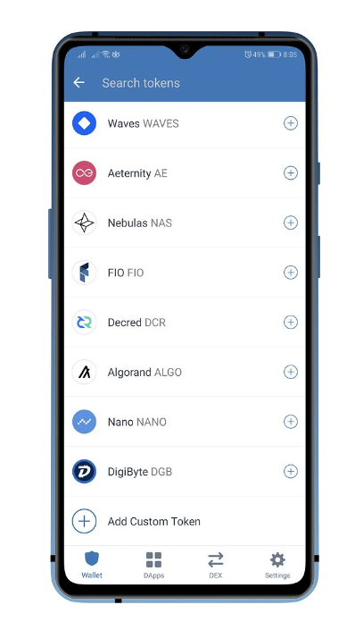
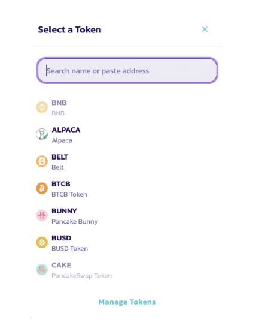
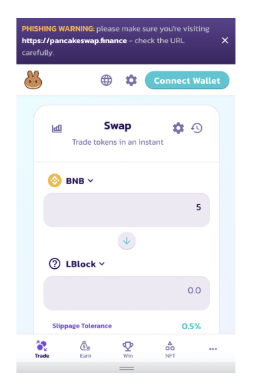

In order to buy and store Dash2Trade tokens – you will need to be in possession of a top-rated wallet that can connect to the Binance Smart Chain.
We would argue that Trust Wallet is the best option in this respect – as the wallet is simple to use, secure, and offers direct access to decentralized exchanges like Pancakeswap.
Quick Overview of How to Set Up Trust Wallet
Here’s a snapshot overview of how to set up Trust Wallet so that you can buy and store Dash2Trade tokens in safety.
Dash2Trade Contract Address: insert contract address
Looking for a more detailed walkthrough of how to set up Trust Wallet so that you can buy and/or store Lucky Block tokens? If so, read on.
The first step required is to download Trust Wallet. As noted above, Trust Wallet is backed by Binance and it comes in the shape of a mobile app.
As such, you will need to download the app to your smartphone via Google Play or the App Store.
With that said, Binance suggests accessing the download link from its own website – so that you can be 100% sure you are obtaining the official Trust Wallet app.
Once you have downloaded Trust Wallet to your phone – open up the app. Next, you will need to click on the ‘Create New Wallet’ button.
Trust Wallet will now ask you to create a PIN of between four and six digits. This PIN will need to be entered every time you wish to access your Trust Wallet. In fact, this needs to be done each time you leave the wallet interface – for additional security.
Next, you will be shown your unique 12-word passphrase – which is essentially the private key for your Trust Wallet.
As such, it’s absolutely crucial that you write the 12 words down correctly and keep the respective sheet of paper somewhere safe.
After all, if your phone is lost or stolen – the only way for you to regain access to your Trust Wallet funds will be by entering this backup passphrase.
Trust Wallet will now need to confirm that you have written the backup passphrase down correctly – both in terms of the words and sequence.
This means that you will need to enter each individual word in the correct order. After typing a few letters, Trust Wallet will allow you to click on the respective word from a list of options.
The next step is to add Dash2Trade to your Trust Wallet interface. For this, you will first need to click on the logo located at the very top-right corner of the app. This will then bring up a list of tokens that by default – are added to Trust Wallet.
Scroll down to the very bottom of the list and click on ‘Add Custom Token’. Next, you might find that by default – the network is selected as ‘Ethereum’.
You will need to change this to the Smart Chain – as this is the blockchain that Dash2Trade operates on.
Next, in order for the Trust Wallet to locate Dash2Trade – you will be required to paste in the correct contract address – which you will find below.
Dash2Trade Contract Address: insert contract address
Once again, it’s worth getting in the habit of verifying the contract address via the Dash2Trade Telegram group.
In doing so, you can be sure that you are entering the correct address. The blank fields will now populate with the correct contract specifics for Dash2Trade – such as the name, symbol, and number of decimals.
And that’s it – you have successfully set up Trust Wallet! If you are yet to buy Dash2Trade – you can do so via Pancakeswap.
Best of all, Trust Wallet connects directly to Pancakeswap – so you can buy and store your Dash2Trade tokens through a single app.
If you want to buy Dash2Trade tokens on Pancakeswap via Trust Wallet – follow the steps outlined below.
First, you need to make sure that you have BNB in your Trust Wallet – and that you have swapped the tokens over to the Smart Chain.
Next, click on the ‘DApps’ button at the bottom of the interface – and look for Pancakeswap. If you can’t find it – you can use the search bar.
Once connected to Pancakeswap, you need to manually enter the contract address so that you can locate Dash2Trade. This will also ensure that you are buying the official Dash2Trade – and not an imitation.
Dash2Trade Contract Address: insert contract address
Next, make sure that BNB is selected as the currency you will be using the pay for your Dash2Trade tokens – which it should be by default.
In the box below BNB, enter the number of tokens that you wish to exchange for Dash2Trade.
Finally, you will need to confirm the purchase. If the transaction doesn’t go through straight away, you might need to increase the slippage tolerance.
Once you have added Dash2Trade to your Trust Wallet – it is crucial that you do everything in your control to keep your digital funds safe.
After all, online cybercriminals are getting smarter – with cryptocurrency wallets often at the forefront of their objectives.
As such, below we discuss some solid tips on how to keep your Trust Wallet and Dash2Trade tokens safe.
First and foremost, we cannot overstate the importance of setting up a strong screenlock password on the mobile device where your Trust Wallet app is located.
In doing so, this will act as the first line of defense – should somebody have access to your device.
This is especially important if your phone is lost or stolen – as the person in possession of the device, would need to know your screenlock password before they can even attempt to access your Trust Wallet app.
Ultimately, the longer and more complex your screenlock password is – the better.
It goes without saying that you should never use a basic, generic password like ‘0000’ or ‘1234’ for your Trust Wallet app.
In doing so, you can be sure that if somebody gets hold of your device and subsequently bypasses your screenlock password – they will have a good chance of accessing your Trust Wallet account. When you initially set the wallet up, Trust Wallet gives you the option of entering a PIN of between 4-6 digits. To maximize security, it’s best to choose a 6-digit PIN.
One of the most effective ways for cybercriminals to hack cryptocurrency wallets remotely is via malware.
And, a common way for this to be achieved is when you unwittingly click on a malicious link that was created by the bad actor.
When this happens, there is every chance that the hacker will be able to remotely gain access to your Trust Wallet and thus – steal your digital assets.
Taking this into account – you must avoid clicking on any links that are posted by an unverified source.
Leading on from the above tip, bad actors via the Telegram app will commonly attempt to deceive people into thinking that they are speaking with the official Dash2Trade admin.
In many cases, this will be achieved by sending a direct message to Dash2Trade token holders – pretending to be a member of the admin team.
Make no mistake about it – no official member of the Dash2Trade team will ever send you a direct message first. If you receive one, block and report the Telegram account in question.
We mentioned earlier that your unique 12-word backup passphrase represents your Trust Wallet private key.
And as such, if somebody has access to these 12 words in the correct order – they can access your Trust Wallet account remotely. In turn, they’ll be able to withdraw your entire balance of digital assets. Therefore, it is of the utmost importance that you do not share your Trust Wallet backup passphrase with anybody – under any circumstance.
This beginner’s guide has explained in simple terms how to set up Trust Wallet – so that you can safely buy and store your Dash2Trade tokens.
We’ve also presented some handy tips on how to keep your Trust Wallet safe – so that you can be sure you avoid being scammed or hacked.